How to get involved
Sail
 Gemara
Gemara
 Governance Playbook
Governance Playbook
An open-source FDC3 desktop agent for the browser, where this demo runs.
fdc3-sail.finos.org
FINOS AIOpen specifications and machine-readable controls for agentic finance.
ai.finos.org Common Cloud ControlsShared threats, controls and assessments, written once and mapped across clouds.
ccc.finos.org Ten FactorA practical method for running governance as versioned code.
tenfactorgovernance.org
Gemara
Schemas for governance, risk, controls, policy and evidence as structured data.
gemara.openssf.org Working groupsThe FINOS meeting calendar, including Sail, AI and CCC.
calendar.finos.org AI FundMember funding that turns shared AI priorities into open-source work.
finos.org
Governance Playbook
A practical guide to policy, architecture and observability for agentic AI.
finos-labs/the-governance-as-code-playbook